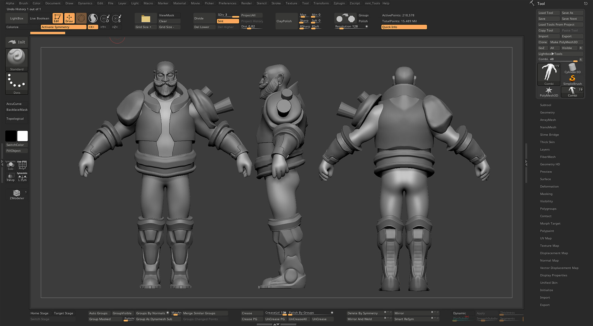
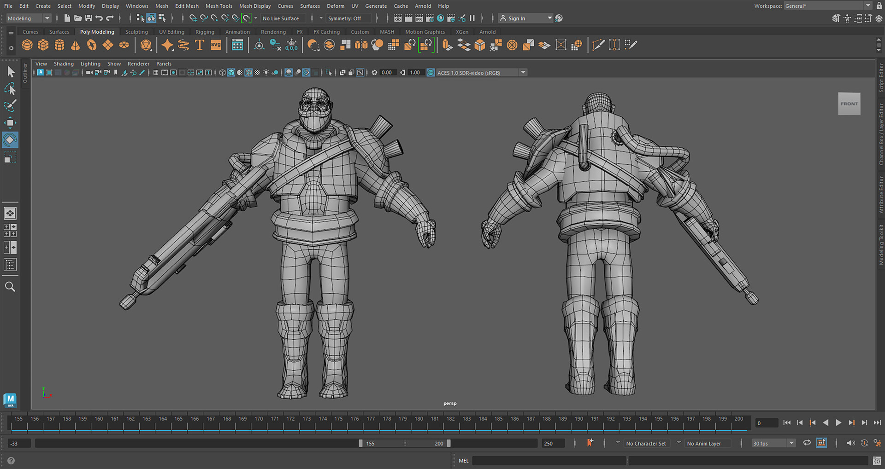
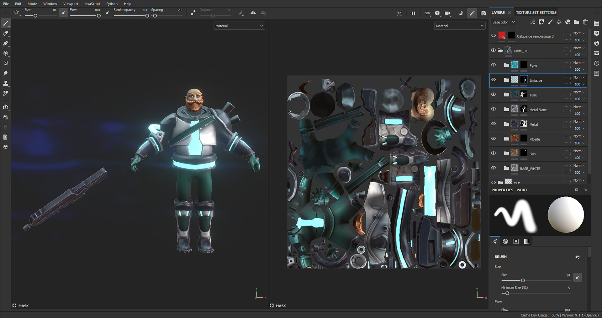
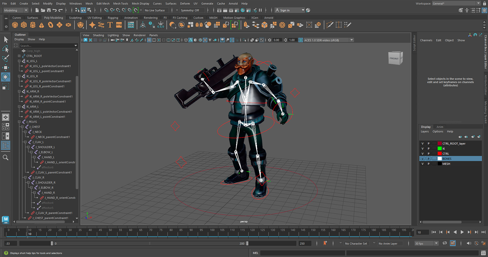
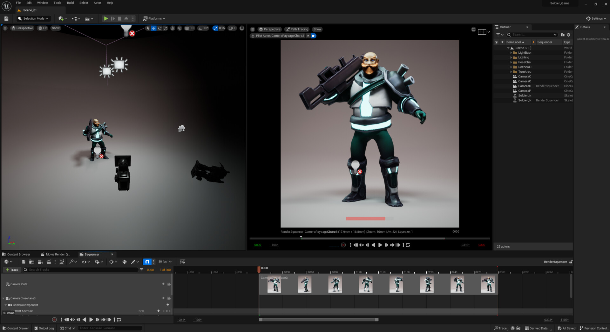

ModelingModélisation
The modeling of this character is similar to my Mabo's Monster process. I began with an anatomy study in ZBrush, and for the armor I did a round trip between ZBrush and Maya. La modélisation de ce personnage ressemble à mon process pour le monstre de Mabo. J'ai commencé par une étude d'anatomie dans ZBrush, et pour l'armure j'ai fait des allers-retours entre ZBrush et Maya.

RetopologyRetopologie
After modeling in ZBrush, we aim for a low-poly count for two reasons: efficiency, and visibility from a distance, since the unit is designed for an RTS view and will appear multiple times on screen. Après la modélisation dans ZBrush, on vise un faible nombre de polygones pour deux raisons : l'efficacité, et la lisibilité de loin, puisque l'unité est conçue pour une vue RTS et apparaîtra plusieurs fois à l'écran.

Texturing
The texture work is primarily done with maps, gradients, and a bit of hand-painting for finishing touches. As for the resolution: since the character appears small in an RTS view on a 1920×1080 screen, I chose a 512×512 texture. This applies to each unit in the game, ensuring optimization. Le travail de texture se fait surtout avec des maps, des dégradés et un peu de peinture à la main pour les finitions. Pour la résolution : comme le personnage apparaît petit en vue RTS sur un écran 1920×1080, j'ai choisi une texture de 512×512. C'est le cas pour chaque unité du jeu, ce qui garantit l'optimisation.

Rig
For the rigging, I aimed for a rig with the fewest bones possible to maximize in-game performance, while retaining the ability to create the desired animations. Pour le rigging, j'ai visé un rig avec le moins d'os possible pour maximiser les performances en jeu, tout en gardant la possibilité de créer les animations voulues.

Animation
I worked on front and side views, but primarily checked the animation output in-game, specifically in the RTS view. The RTS view in the video is not zoomed in as much as in-game; the real camera is much more distant. J'ai travaillé sur les vues de face et de profil, mais j'ai surtout vérifié le rendu des animations en jeu, en particulier dans la vue RTS. Dans la vidéo, la vue RTS est plus rapprochée qu'en jeu : la vraie caméra est bien plus éloignée.
RTS viewVue RTS
Functional In-GameFonctionnelle en jeu
The unit integrated and functional in the game: selected, ordered around, fighting. The end of the pipeline is a unit that plays, not just a model that renders. L'unité intégrée et fonctionnelle dans le jeu : sélectionnée, déplacée sur ordre, au combat. Le bout du pipeline, c'est une unité qui joue, pas seulement un modèle qui s'affiche.
The game:Le jeu : Industrial Warfare (Créajeux).
Final RendersRendus finaux
The finished unit rendered in Unreal Engine, in realtime lit mode, with a path-traced pass for reference. The concept was designed by Alexandre Bédèche. L'unité terminée, rendue dans Unreal Engine en mode Lit temps réel, avec une passe en path tracing comme référence. Le concept a été dessiné par Alexandre Bédèche.
